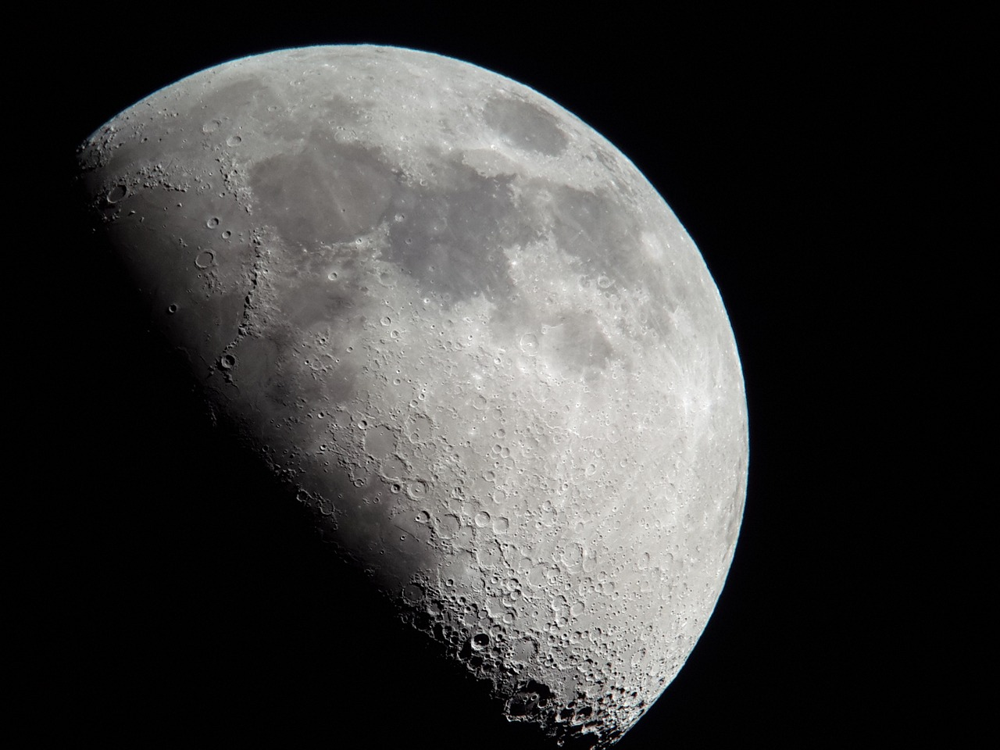
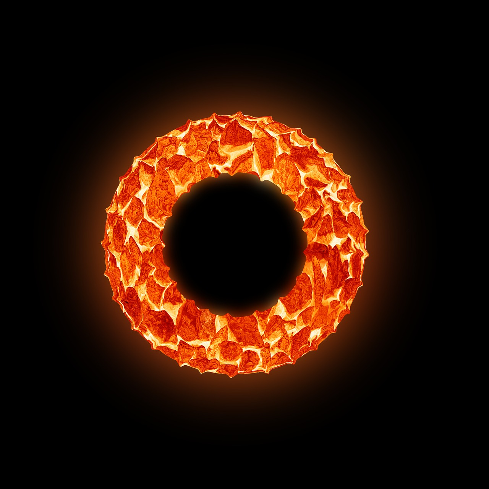

First of all, I underappreciated the understanding of the Greeks. They too knew that irrationallity was the source of beauty, as evidenced by their frequent use of the golden ration, an irrational number.
Duchamp said that art should be at the service of the mind, and Shoenberg experimented with atonality to create his haunting works.
Art should be more than beautiful: It must create understanding on its own. It must be like the Large Hadron Collider, and act as a vessel to understand the richness of the universe.
That means that it does not necessarily fit into our intuitions and expectations of beauty and rationality. A relative looking glass that gives birth to new ideas.
 The moon only glows with the illumination of the sunTime to get my hands dirty.
About a year and a half ago, I wrote a poem which I named Escaping the Chaos. Here it is.
Wind pushes the fringes of the scene The air tastes like earth and mist Water intermixed with trees, fixating on all surfaces. The boundaries of the storm curve along a cave, A space holding the connections that perceive all. Swirl, swirl, little breeze Until you become a hurricane. The entrails of the burrow are scraped and battered There end is nowhere near. There! There is the solution! The tumbling air came to a still as the machine picked up the utensil. Hold it, liberate the chaos through your appendages. Pure energy ebbs through the rails, Until the final destination is covered in scratches. Hurry, hurry now! The flow continues now until it all starts shaking. The water pours, fills in the crevices deep in the ultimate surface. Nobody bears witness of the magic, nobody hears the flow of rushing waves. The machine is on automatic, long ago programmed and now left as obsolete. It runs its course, for otherwise destruction is eminent. The storm calms its intensity. The machine is spent, worn, yet serene as the now still waters. It opens its eyes, and lets out a sigh.
I must change the title, for now I know that chaos is what fueled the machine's production. It allowed creation.
There is a fear of chaos enrapturing me again, but I shall plunge into it.
That will prove my courage to myself and the universe.
The moon only glows with the illumination of the sunWarmth curses through me.
Nature creates a beauty that is appreciated by humans through the use of irrationality.
Yet humans are so captivated by the form, by the symmetry, that they often fail to see the essence.
It is not intristic in human nature to look past the veil.
When I began drawing, I wanted beauty. I wanted my work to be realistic as possible, for I deemed that perfection.
But I was wrong. I have to explore irrationallity, dissonance, and chaos, for theirin lies beauty.
Thank you Alexander LiuEssence cannot be overcome by form.
Now that my health is returning, I will do anything in my power to never again let it define me. My will shall control
The unification of physics, mathematics, philosophy and art. A task that perhaps only nature can undertake, but I will nevertheless attempt.
The first questions I will explore are: Is symmetry really the absolute perfection? The Greeks certainly thought so, and modern physicists strive to prove supersymmetry. But is it realistic?
Music is deemed more beautiful when the rations are well proportioned. Faces with near perfect symmetry are the ideal. 1:1, 1:2, 2:1, 2:2. On it goes.
But then there is pi. Not the most rational of the ratios, yet it is the one that nature uses the most. The most irrational ration is fundamental to the epitomy of symmetry: the circle.
Symmetry is not perfection.
I was a baby elephant at the circus my entire life. Looping around a circle on a rope. I set my focus high in an attempt to escape, but once the rope was cut, I kept on circling. Depression, panic disorder, and PTSD. Do real elephants get these illnesses too?
I had the sky before me but my mind refused to fly. I had to step outside the circle, but my ambiguity led me to hospitalization. Medication.
Now it is clear.
I want to test all limits, of myself and those of society. The challenger. The unifier of mathematics, physics, philosophy, and art.
The supplanter.
Watch me singe my hair with the heat of the sun.